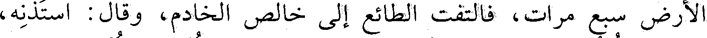
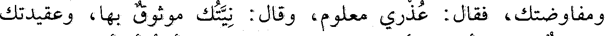
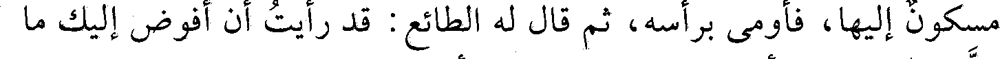
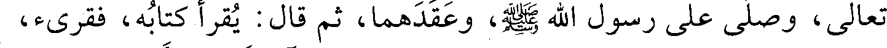
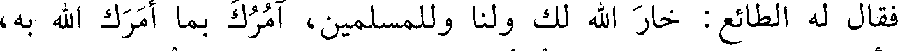
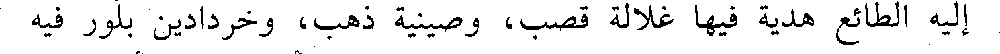
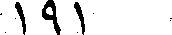
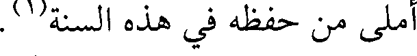
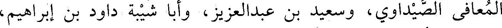

File: 000260.gt.txt (if the image is defective, simply delete all Arabic text and the line will be excluded)

رجل فاضل عالم، ذكره الحاكم، فقال : كان يعطي كل نوع من أنواع
File: 000261.gt.txt (if the image is defective, simply delete all Arabic text and the line will be excluded)

العلوم حقه، وكتب الحديث الكثير، ولم يحدث تورعا، ولزم مسجده
File: 000262.gt.txt (if the image is defective, simply delete all Arabic text and the line will be excluded)

قلت : روى عنه الحاكم حكاية.
File: 000263.gt.txt (if the image is defective, simply delete all Arabic text and the line will be excluded)

224
File: 000264.gt.txt (if the image is defective, simply delete all Arabic text and the line will be excluded)

هذا أيها الملك، أهذا هو الله عز وجل؟ فالتفت إلى عبدالعزيز بن يوسف
File: 000265.gt.txt (if the image is defective, simply delete all Arabic text and the line will be excluded)

وقال له: فهمه وقل له: هذا خليفة الله في الأرض، ثم استمر يمشي ويقبل
File: 000266.gt.txt (if the image is defective, simply delete all Arabic text and the line will be excluded)

الأرض سبع مرات، فالتفت الطائع إلى خالص الخادم وقال: استذنه،
File: 000267.gt.txt (if the image is defective, simply delete all Arabic text and the line will be excluded)

فصعد عضد الدولة، فقبل الأرض دفعتين، فقال له: ادن إلي ادن إلي، فدنا
File: 000268.gt.txt (if the image is defective, simply delete all Arabic text and the line will be excluded)

فقبل رجله، وثنى الطائع يمينه عليه، وأمره، فجلس على كرسي، بعد أن
File: 000269.gt.txt (if the image is defective, simply delete all Arabic text and the line will be excluded)

كرر عليه: اجلس، وهو يستعفي فقال له: أقسمت لتجلسن، فقبل
File: 000270.gt.txt (if the image is defective, simply delete all Arabic text and the line will be excluded)

الكرسي وجلس، وقال له: ما كان أشوقنا إليك وأتوقنا إلى رؤيتك
File: 000271.gt.txt (if the image is defective, simply delete all Arabic text and the line will be excluded)

ومفاوضتك، فقال: عذري معلوم، وقال: نيتك موثوق بها، وعقيدتك
File: 000272.gt.txt (if the image is defective, simply delete all Arabic text and the line will be excluded)

مسكون إليها، فأومأ برأسه، ثم قال له الطائع: قد رأيت أن أفوض إليك ما
File: 000273.gt.txt (if the image is defective, simply delete all Arabic text and the line will be excluded)

وكل الله إلي من أمور الرعية في شرق الأرض وغربها، وتدبيرها في جميع
File: 000274.gt.txt (if the image is defective, simply delete all Arabic text and the line will be excluded)

جهاتها، سوى خاصتي وأسبابي، فتول ذلك مستخيرا بالله. قال: يعينني الله
File: 000275.gt.txt (if the image is defective, simply delete all Arabic text and the line will be excluded)

على طاعة مولانا وخدمته، وأريد وجوه القواد أن يسمعوا لفظ أمير
File: 000276.gt.txt (if the image is defective, simply delete all Arabic text and the line will be excluded)

المؤمنين. فقال الطائع: هاتوا الحسين بن موسى، ومحمد بن عمرو بن
File: 000277.gt.txt (if the image is defective, simply delete all Arabic text and the line will be excluded)

معروف، وابن أم شيبان، والزينبي، فقدموا، فأعاد الطائع له القول
File: 000278.gt.txt (if the image is defective, simply delete all Arabic text and the line will be excluded)

بالتفويض، ثم التفت إلى طريف الخادم، فقال: يا طريف تفاض عليه
File: 000279.gt.txt (if the image is defective, simply delete all Arabic text and the line will be excluded)

الخلع ويتوج، فنهض إلى الرواق وألبس الخلع، وخرج قادما ليقبل
File: 000280.gt.txt (if the image is defective, simply delete all Arabic text and the line will be excluded)

الأرض، فلم يطق لكثرة ما عليه، فقال الطائع: حسبك، حسبك! وأمره
File: 000281.gt.txt (if the image is defective, simply delete all Arabic text and the line will be excluded)

بالجلوس، ثم استدعى الطائع تقديم ألويته، فقدم لواءين، واستخار الله
File: 000282.gt.txt (if the image is defective, simply delete all Arabic text and the line will be excluded)

تعالى، وصلى على رسول الله صعلم، وعقدهما، ثم قال: يقرأ كتابه، فقرىء،
File: 000283.gt.txt (if the image is defective, simply delete all Arabic text and the line will be excluded)

فقال له الطائع: خار الله لك ولنا وللمسلمين، آمرك بما أمرك الله به،
File: 000284.gt.txt (if the image is defective, simply delete all Arabic text and the line will be excluded)

وأنهاك عما نهاك الله عنه، وأبرأ إلى الله مما سوى ذلك، انهض على اسم
File: 000285.gt.txt (if the image is defective, simply delete all Arabic text and the line will be excluded)

الله، ثم أخذ الطائع سيفا كان بين المخدتين فقلده به مضافا إلى السيف
File: 000286.gt.txt (if the image is defective, simply delete all Arabic text and the line will be excluded)

الذي قلده مع الخلعة، وخرج من باب الخاصة، وسار في البلد، ثم بعث
File: 000287.gt.txt (if the image is defective, simply delete all Arabic text and the line will be excluded)

إليه الطائع هدية فيها غلالة قصب، وصينية ذهب، وخردادين بلور فيه
File: 000288.gt.txt (if the image is defective, simply delete all Arabic text and the line will be excluded)

شراب، وعلى فم الخردادين خرقة حرير مختومة وكأس بلور، وأشياء من
File: 000289.gt.txt (if the image is defective, simply delete all Arabic text and the line will be excluded)

هذا الفن، فجاء من الغد أبو نصر الخازن ومعه من الأموال نحو ما ذكرنا في
File: 000290.gt.txt (if the image is defective, simply delete all Arabic text and the line will be excluded)

دخوله الأول في السنة الماضية. وجلس للهناء، فقال أبو إسحاق الصابي
File: 000291.gt.txt (if the image is defective, simply delete all Arabic text and the line will be excluded)

191
File: 000292.gt.txt (if the image is defective, simply delete all Arabic text and the line will be excluded)

قصيدة منها:
File: 000293.gt.txt (if the image is defective, simply delete all Arabic text and the line will be excluded)

فروى عنه أبو نصر بن الجبان، وابن دوما النعالي.
File: 000294.gt.txt (if the image is defective, simply delete all Arabic text and the line will be excluded)

أملي من حفظه في هذه السنة(1).
File: 000295.gt.txt (if the image is defective, simply delete all Arabic text and the line will be excluded)

116 - عبدالجبار بن عبدالصمد بن إسماعيل، أبو هاشم السلمي
File: 000296.gt.txt (if the image is defective, simply delete all Arabic text and the line will be excluded)

المؤدب المقرىء.
File: 000297.gt.txt (if the image is defective, simply delete all Arabic text and the line will be excluded)

قرأ القرآن على أبي عبيدة أحمد بن ذكوان، وسمع محمد بن خريم،
File: 000298.gt.txt (if the image is defective, simply delete all Arabic text and the line will be excluded)

وجعفر بن أحمد بن عاصم، والقاسم بن عيسى العصار، ومحمد بن
File: 000299.gt.txt (if the image is defective, simply delete all Arabic text and the line will be excluded)

المعافى الصيداوي، وسعيد بن عبدالعزيز، وأبا شيبة داود بن إبراهيم،
File: 000300.gt.txt (if the image is defective, simply delete all Arabic text and the line will be excluded)

وعلي بن أحمد علان، وأبا بكر محمد بن إبراهيم بن المنذر، وطائفة
File: 000301.gt.txt (if the image is defective, simply delete all Arabic text and the line will be excluded)
سواهم بالشام، ومصر، والحجاز.
File: 000302.gt.txt (if the image is defective, simply delete all Arabic text and the line will be excluded)

وعنه تمام الرازي، ومكي بن الغمر، وعبدالوهاب الميداني، وأبو
File: 000303.gt.txt (if the image is defective, simply delete all Arabic text and the line will be excluded)

الحسن بن جهضم، وعلي بن بشر بن العطار، ومحمد بن عوف المزني.
File: 000304.gt.txt (if the image is defective, simply delete all Arabic text and the line will be excluded)

وولد سنة ست وثمانين ومئتين.
File: 000305.gt.txt (if the image is defective, simply delete all Arabic text and the line will be excluded)

قال عبدالعزيز الكتاني(2) : توفي في صفر سنة أربع وستين، وجمع
File: 000306.gt.txt (if the image is defective, simply delete all Arabic text and the line will be excluded)

من المصنفات شيئا كثيرا، وكان ثقة مأمونا، انتقى عليه أحمد بن القاسم
File: 000307.gt.txt (if the image is defective, simply delete all Arabic text and the line will be excluded)

ابن الخشاب بدمشق.
File: 000308.gt.txt (if the image is defective, simply delete all Arabic text and the line will be excluded)

117 - عبدالرحمن بن الحارث ابن أبي شيخ، أبو أحمد الغنوي.
File: 000309.gt.txt (if the image is defective, simply delete all Arabic text and the line will be excluded)

حدث عن جعفر الفريابي، وعلي بن الحسين بن حبان، ومحمد بن